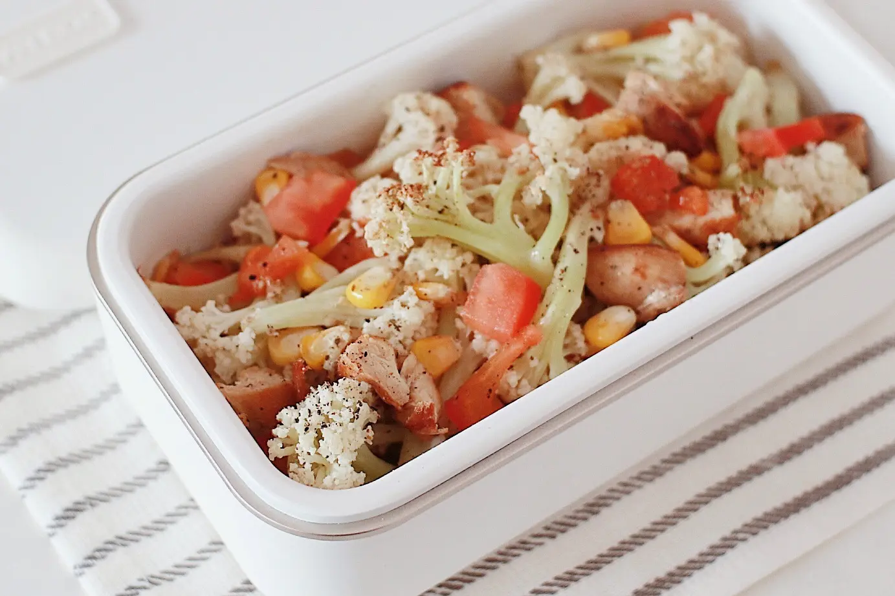

Cauliflower Chicken Stir Fry

Description
Cauliflower chicken stir fry is a traditional Chinese family dish. It is easy to cook and very healthy. It's a must try for chicken lovers!
Ingredients
- 1/2 pound of chicken breast
- 1 pound of cauliflower
- one tomato
- corn (optional)
- two tbsp of olive oil
- one tbsp of minced garlic
- one tbsp of salt
- one tbsp of soy sauce
- one tbsp of bean paste
- one tbsp of cooking wine
- one tbsp of ground white pepper
- 200 ml water
Steps
- Cut the chicken into small pieces the size of bottle caps.
- Marinate the chicken with cooking wine, salt, and white pepper and sit for 25 minutes.
- Chop the cauliflower into to small pieces and briefly blanch them.
- Heat a deep pan and pour in the olive ol, add the bean paste once the oil is warmed up.
- Important step! slowly stir the bean paste til you can smell the rich flavour from the sauce.
- Add the cauliflower and mix it with minced garlic, stir fry til everything mixed up well.
- Pour in the chicken, stir fry til the meat turns white and then drop some soy sauce.
- Add one chopped tomato and 200 ml water, turn to medium heat and cover the pot, let it simmer for 10 minutes.
- The dish is ready. Enjoy!